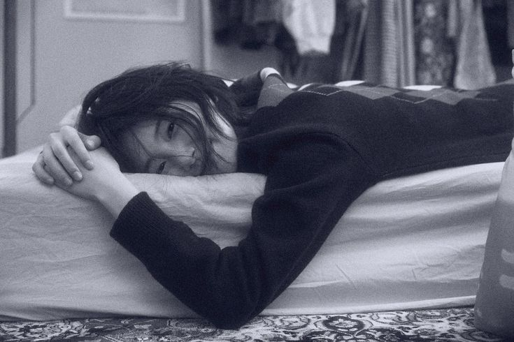
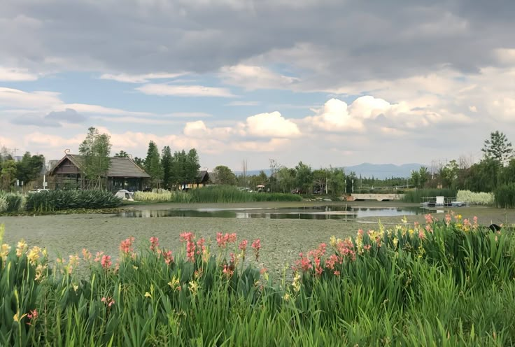

Ranking
- Lightroom
- DazzCam
- VSCO
Estilo de fotos
Retrato
- Dato
- Este se enfoca en una persona, destacando su rostro, expresion o personalidad. 
Paisaje
- Dato
- Este captura espacios naturales o urbanos, como montañas, playas o ciudades, transmite calma y tranquilidad por los espacios abiertos y la naturaleza. 
Blanco y negro
- Dato
- Transmite emociones más profundas y hace que la foto se sienta artistica.